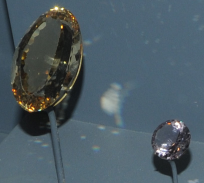
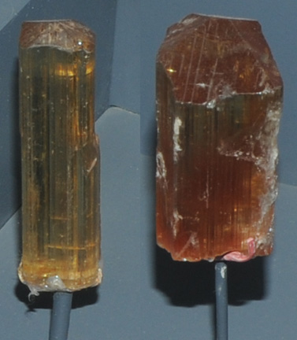
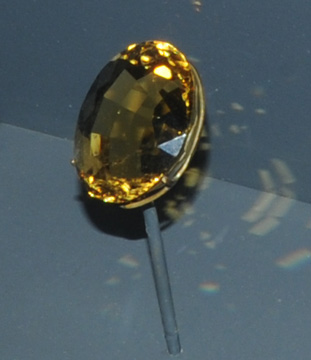

Na4(Si,Al)12O24Cl
Marialite is a silicate with chlorine content and has the composition Na4(Si,Al)12O24Cl. The gems above are 103.5 and 8.1 carats and are from Tanzania. The samples above right right are about .5x3 cm and 1x2.5 cm and are from Dodoma, Tanzania. These samples are displayed in the Smithsonian Museum of Natural History.
Th marialite gem at right is 73.3 carats and is from Dodoma, Tanzania.
Mindat: Marialite
|


|